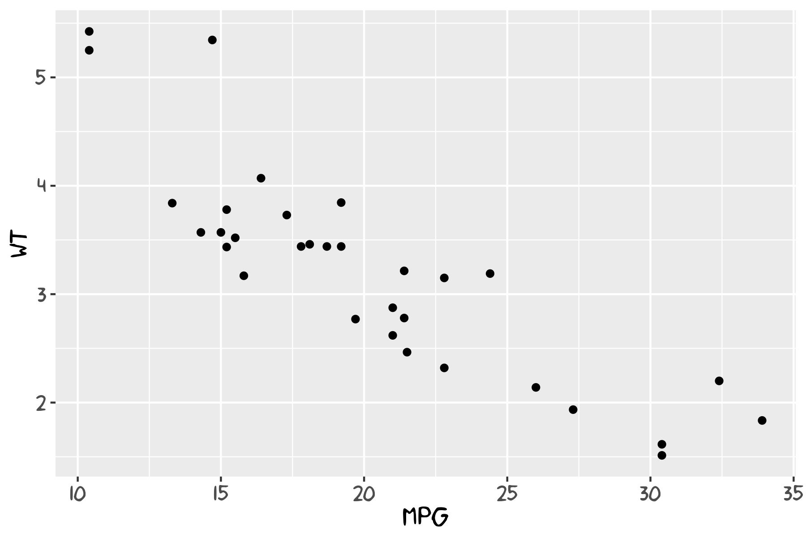
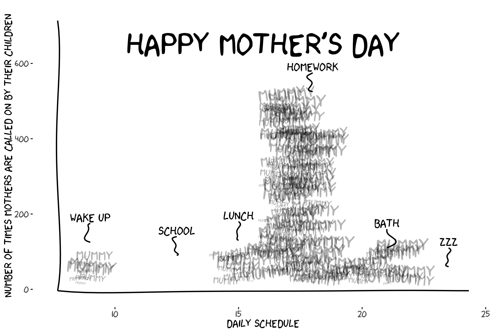
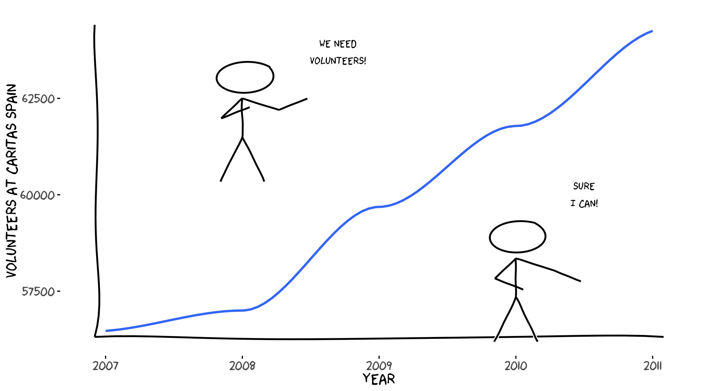

An R package to create hand-drawn (xkcd-style) plots and elements for ggplot2.
This repository contains the source for the xkcd package (development version). Originally from https://r-forge.r-project.org/projects/xkcd/ which is deprecated and now maintained independently.
Install
Install the latest CRAN version:
install.packages("xkcd")Install the current development version from GitHub:
# using remotes
remotes::install_github("ToledoEM/xkcd")
# or using devtools
devtools::install_github("ToledoEM/xkcd")Quick Start
library(xkcd)
library(ggplot2)
df <- data.frame(x = 1:10, y = cumsum(runif(10, -0.5, 0.8)))
ggplot(df, aes(x = x, y = y)) +
geom_xkcdpath(linewidth = 1, colour = "black") +
theme_xkcd()Key Notes
- The package uses
Hmisc::bezier()internally for smoothing paths. - Uses
linewidth(ggplot2 >= 3.4.0) for line thickness; older code usingsizeis supported where possible. - Requires xkcd fonts to be installed; see Fonts section below.
New in 0.1.1
-
Reproducible plots.
geom_xkcdpath(),xkcdrect()andxkcdman()take aseedargument, so the same plot renders identically every time. The global random state is left untouched.ggplot(df, aes(x = x, y = y)) + geom_xkcdpath(linewidth = 1, seed = 42) + theme_xkcd() wobbleargument scales how much the lines wander.1is the default look,0draws them straight.-
xkcdrect()is now a standard geom (breaking change). It returns a single layer and uses the usualfill,colourandlinewidthaesthetics, which can be mapped to variables. Faceting and plot-level aesthetics now work.# before xkcdrect(mapping, data, fillcolour = "pink", borderlinewidth = 1) # now xkcdrect(mapping, data, fill = "pink", linewidth = 1)The old
fillcolour/bordercolour/borderlinewidtharguments still work for one release but warn. xkcdline()is deprecated in favour ofgeom_xkcdpath()and warns when used.
Fonts
To use xkcd fonts in your plots, you need to install and register them with R’s graphics system.
Install xkcd Fonts
If xkcd fonts are not already installed on your system:
library(extrafont)
# Download and install the font
download.file(
"https://toledoem.github.io/img/xkcd.ttf",
dest = "xkcd.ttf", mode = "wb"
)
font_import(pattern = "[X/x]kcd", prompt = FALSE)You can also download the font from the iphyton repository XKCD-font: xkcd.ttf
Quick font-check (fundamental)
Run this small example to verify the xkcd font is available and to produce a quick check plot. This should be run locally after installing the font and registering it with extrafont.
# Font availability check and example plot
library(extrafont)
library(ggplot2)
if ('xkcd' %in% extrafont::fonts()) {
p <- ggplot() + geom_point(aes(x = mpg, y = wt), data = mtcars) +
theme(text = element_text(size = 16, family = "xkcd"))
} else {
warning("xkcd fonts are not installed; using default font for plot.")
p <- ggplot() + geom_point(aes(x = mpg, y = wt), data = mtcars)
}
print(p)
# Optionally save a small PNG to `vignettes/` for documentation purposes
try({
ggsave(filename = file.path("vignettes", "font_check.png"), plot = p, width = 6, height = 4)
}, silent = TRUE)
Figure Pose Helper
An interactive browser tool to design xkcdman() poses visually — drag limbs, adjust sliders, and copy the generated R code directly into your script.
Example Images
Below are two examples from the vignette:


Development
Set up a development workflow with:
Note: A TeX distribution (for example, MacTeX or TinyTeX) is required to compile vignettes or to build the PDF manual during development. If LaTeX is not available you can either skip the manual with --no-manual when checking or install TinyTeX from R:
# from R: install tinytex and the TinyTeX distribution
install.packages("tinytex")
tinytex::install_tinytex()
# Regenerate documentation from roxygen comments
devtools::document()
# Run package checks (skip PDF manual if LaTeX not installed)
devtools::check(args = "--no-manual")
# Build vignettes
devtools::build_vignettes()
# Install from local source
devtools::install_local()To render the vignettes directly:
rmarkdown::render("vignettes/xkcd-intro.Rmd")
rmarkdown::render("vignettes/xkcd-figure.Rmd")
rmarkdown::render("vignettes/xkcd-penguins.Rmd")Three vignettes are available:
- xkcd-intro — Introduction and basic usage
- xkcd-figure — Drawing xkcd-style stick figures
- xkcd-penguins — Example with the Palmer Penguins dataset
Dependencies
The package requires:
- ggplot2 — Graphics framework
- Hmisc — Bezier curve interpolation
- grid — Low-level graphics primitives (ships with R, no install needed)
- extrafont — Font management
Install dependencies with:
install.packages(c("ggplot2", "Hmisc", "extrafont"))Contributing
Contributions, bug reports, and pull requests are welcome. Please open an issue with a description and minimal reproducible example if relevant.
License
This package is released under the MIT License. See the LICENSE file for details.